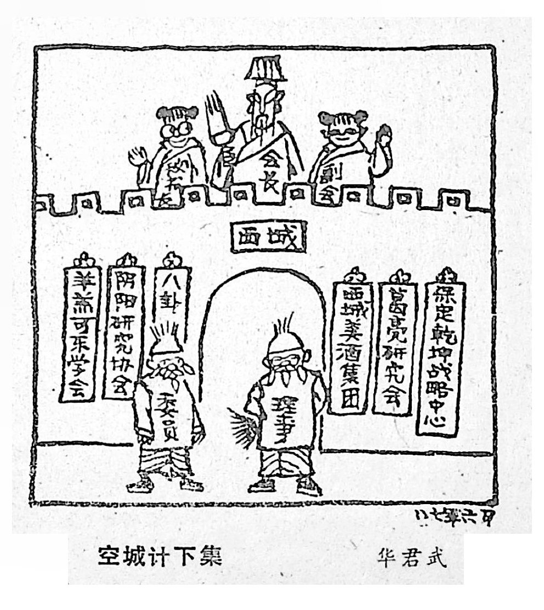

华君武 《人事》1987年第12期（总第27期），第39页
空城计下集
The Empty City Stratagem, Part Two
- Text in the drawing
- 西城 / 会长 / 副会长 / 秘书长（？） / 委员 / 理事 / 八卦 / 阴阳研究协会 / □□可乐学会 / 西城美酒集团 / 诸葛亮研究会 / 保定乾坤战略中心
Xicheng / President / Vice-president / Secretary-general (?) / Committee member / Board member / Eight Trigrams / Yin-Yang Research Association / [?] Cola Society / Xicheng Fine Wine Group / Zhuge Liang Research Society / Settle-Heaven-and-Earth Strategy Centre - Description
- A sequel to the opera The Empty City Stratagem: Zhuge Liang sits on the city wall as a society president flanked by his officers, the old gate sweepers below are now committee and board members, and the gate is hung with banners for a crowd of societies, associations and strategy centres.
- Note
- In the Romance of the Three Kingdoms, Zhuge Liang bluffs an army away from the undefended city of Xicheng by sitting calmly on its wall with two boy attendants and a few old sweepers. Hua Junwu (1915–2010) was China's best-known satirical cartoonist; the target here is the mushrooming of nominal societies and research centres, each with its own titled officers.
- Artist
- Hua Junwu 华君武
- Published in
- 《人事》1987年第12期（总第27期）, p. 39
- Themes
- Overstaffing and overlapping agencies · Formalism · Fable, legend and history

Cite
Hua Junwu, “空城计下集” [The Empty City Stratagem, Part Two], Renshi (Personnel) 《人事》, 1987, no. 12, p. 39.